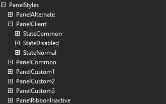

KryptonCustomPaletteBase
Use the KryptonCustomPaletteBase component to define or modify a global palette. You can then assign use of the palette to individual Krypton controls. Alternatively you can update the KryptonManager to use it as the global palette and so all Krypton controls will be affected that have not already been given a custom palette to use.
BasePaletteMode
BasePaletteMode is used to determine how to inherit individual palette values that have not been specified in the palette component itself. When you create a new KryptonCustomPaletteBase instance all the palette values are defined to inherit from the base palette.
If you choose Global as the base palette then values will inherit from whatever has been specified as the global palette in the KryptonManager component. Other values include built-in palettes such as the Professional - Office 2003 and the Professional - System options. The last option is called Custom and is valid only when you provide a palette reference to the BasePalette property.
BasePalette
BasePalette should be used when you need to inherit from another KryptonCustomPaletteBase instance instead of the global palette or one of the built-in palettes. Once you assign a reference to this property the BasePaletteMode will automatically be changed to the Custom enumeration value.
Note that you are not allowed circular references in the use of base palettes. So if you define the base to be another palette instance and then try to make the other palette instance references back to this one then it will cause an error. Whenever you alter the base palette it will check the chain to ensure no circular dependency exists.
Use of the base palette is best explained with a couple of example scenarios. Imagine you are using the Professional - System built-in palette for your Krypton controls. You can set this up by altering the global palette to be Professional - System on the KryptonManager component. Now you discover that you need to alter just one aspect of the appearance such as the border control of all the button controls.
To solve this you need to create a KrytonPalette instance and define the base palette as the Professional - System built-in palette. Then you update the border color setting for the button control to the required value, all other values will inherit from the base palette and so this is the only custom value that needs defining. Finally alter the KryptonManager so it uses our new KryptonCustomPaletteBase as the global palette.
A variation on this scenario is where you need to provide this custom border to a group of Krypton controls but not to all of them. In this case you would create the new KrytonPalette as before but this time you would inherit it from the Global palette. Then you assign use of the new palette to each of the individual controls that need the altered appearance. All the other controls will continue to use the Global palette and so be unaffected.
BaseRendererMode and BaseRenderer
Each builtin palette specifies the renderer instance to use when drawing. The Office 2007 builtin palettes use the Office2007 renderer class and the set of Professional builtin palettes use the associated Professional renderer class. Different render implementations are used for different palettes to provide custom drawing actions that are palette specific.
In the unlikely event you need to alter the renderer used you can modify the BaseRendererMode property. If you create your own renderer or a renderer that derives from a builtin one then you would assign it to the BaseRenderer property. By default the BaseRendererMode property is defined as Inherit and so the palette inherits the render setting from the base palette.
AllowFormChrome
Some palettes require that KryptonForm instances perform custom chrome drawing in the border and caption areas. The default value of Inherit specifies that the setting by retrieved from the base palette setting. For example the Office 2007 - Blue builtin palette will provide True for this property but the Professional - Office 2003 will return False. To turn off custom chrome then you would set this property to False.
Palette values
The set of properties for each type of style follow the same basic structure. At the top level is the name of the a styles collection such as ButtonStyles, LabelStyles, PanelStyles etc. Within this collection are contained each of the individual style instances. For example the PanelStyles property contains PanelClient, PanelAlternate, PanelCustom1 and PanelCommon. The first three of these are PanelClient, PanelAlternate and PanelCustom1 which are actual styles you can choose when using a KryptonPanel instance. PanelCommon is the base style that the other three inherit from, so you can place common settings in PanelCommon and know that the other three styles will inherit those settings.
For each individual style there are child properties for each of the possible states associated with that style. So the PanelClientstyle contains StateDisabled, StateNormal and StateCommon. Here the StateDisabled and StateNormal relate to the actual states of the PanelClient style and the StateCommon is the base set of values that the StateDisabled and StateNormal inherit from.
If you examine the KryptonPanel control that uses the PanelClient style you will see it also has the same three set of state values that can be overridden on a per control basis. This hierarchy of style collection, individual style and style states can be seen in figure 1.

Figure 1 — Panel styles hierarchy
If you do not set a value for any of the style states such as StateNormal, StateDisabled and StateCommon then it inherits the values by using a top level group called Common. There are three entries in the Common collection called StateDisabled, StateOthers and StateCommon. The style specific StateDisabled will inherit from the palette level StateDisabled if the style specific StateCommon is not defined. All other style specific states inherit from StateOthers if the style specific StateCommon is not defined. Both of the palette level StateDisabled and StateOthers inherit from the StateCommon values. Only if the palette level StateCommon value is not defined will it use the base palette.
This is illustrated with a simple example. Imagine we have a KryptonPanel control instance with a style of PanelClient that is using our KryptonCustomPaletteBase instance as the defined palette. The control is in the normal state and so uses the following inheritance sequence to discover display values to use:
(Look for a value at the individual control level)
KryptonPanel.StateNormal
KryptonPanel.StateCommon
(Look for a value at the palette level)
KryptonCustomPaletteBase.PanelStyle.PanelClient.StateNormal
KryptonCustomPaletteBase.PanelStyle.PanelClient.StateCommon
KryptonCustomPaletteBase.Common.StateOthers
KryptonCustomPaletteBase.Common.StateCommon
The advantage of this inheritance chain is the speed with which you can customize at the appropriate level. If you want to set the background color of all Krypton controls then you would alter the KryptonCustomPaletteBase.Common.StateCommon level values. To alter the background for just all the panel styles then you would change KryptonCustomPaletteBase.PanelStyles.PanelCommon.StateCommon values. To change the background of just the PanelClient you would alter KryptonCustomPaletteBase.PanelStyles.PanelClient.StateCommon.
ToolMenuStatus
You can use the palette to alter not just the styling of the Krypton controls but also the appearance of the tool strips, menu strips, status strips and context menu strips. This is the purpose of the ToolMenuStatus property on the palette.
Below this property are a whole range of property collections that related to a particular area such as ToolStrip and StatusStrip. You can navigate and alter values as appropriate to achieve the customized look you need that will match the rest of the palette settings.
A good way to work with these settings is to alter the KryptonManager so the palette is the global palette. Now any change you make will be instantly reflected in the tool, menu and status strips on your form. Then try changing the color of interest to be red in order to see the effect it has on the display. This will then point out how to them modify the color to the actual value you require.
Import and export
At design time you can use the smart tag of the KryptonCustomPaletteBase to invoke the exporting or importing of palette settings. Exporting will allow you to generate an XML file that contains all the values that have been changed from the default. You can then import these settings into another KryptonCustomPaletteBase instance in the same or a different application. Use the Reset option from the smart tag to reset all the palette properties back to the default settings that have when the component is first created.
See also
External Themes Bundled Names - How to customize and display the names of custom themes.